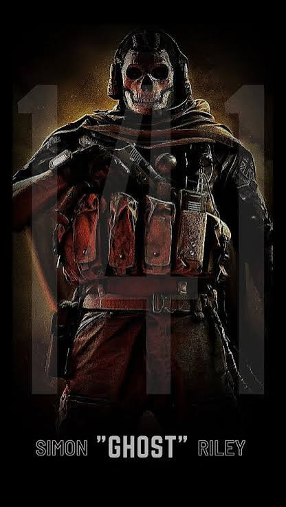

Stealth
Specializes in covert operations, infiltration and moving through hostile areas while minimizing detection.
CALL OF DUTY CHARACTER WIKI
Operator profile, background information and combat skills of Task Force 141's iconic soldier.

Simon "Ghost" Riley is a British special forces operator in the Call of Duty franchise. Known for his skull-patterned balaclava, tactical gear and serious personality, he is a prominent member of Task Force 141.
Ghost is recognized for his experience in covert operations, his ability to work under pressure and his loyalty to his teammates.
Task Force 141 Special Forces Covert Operations| Full Name | Simon Riley |
|---|---|
| Call Sign | Ghost |
| Nationality | British |
| Occupation | Special Forces Operator |
| Affiliation | Task Force 141 |
| Franchise | Call of Duty |
Ghost combines tactical experience with teamwork and adaptability in dangerous operations.
Specializes in covert operations, infiltration and moving through hostile areas while minimizing detection.
Experienced in tactical engagements, close-quarters combat and high-risk military missions.
Works with his team to gather intelligence, plan missions and adapt to changing threats.
Selected appearances of Simon "Ghost" Riley in the Modern Warfare storyline.
Note: Call of Duty: Ghosts (2013) is a separate game and does not feature Simon Riley as its main character.
"The name's Ghost."